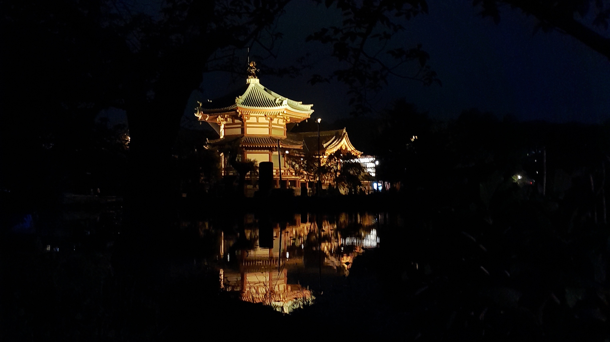

Ueno Park
Location 7 Chome Ueno, Taito City, Tokyo 110-0005
Activities You can go to the Zoo, explore the museums or even go shopping in the nearby Ameya-Yokochō street.
Tips Go when there is less people. Special tip is to go at night you'll see a different scenery. The place is peaceful and the lights are warm, especially by the lake.